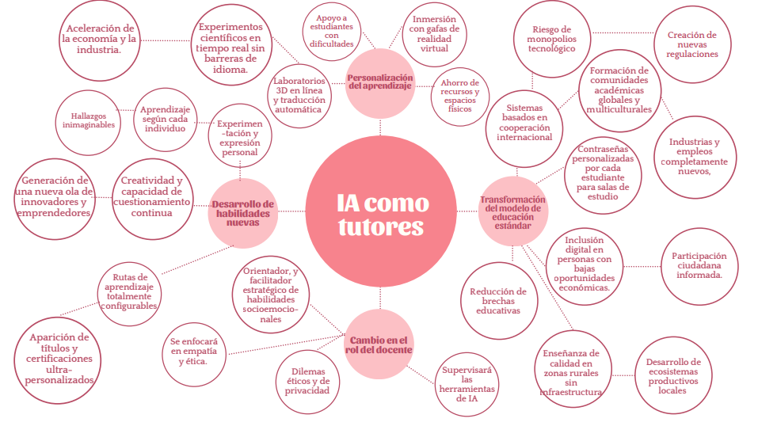
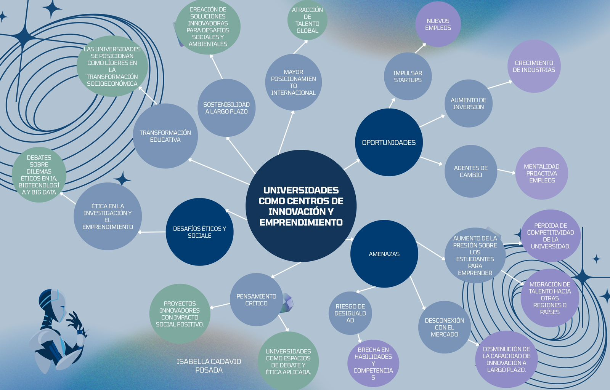
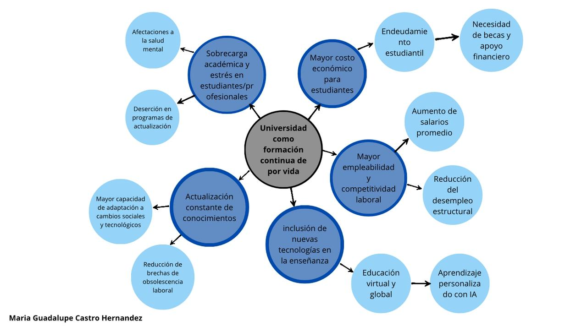
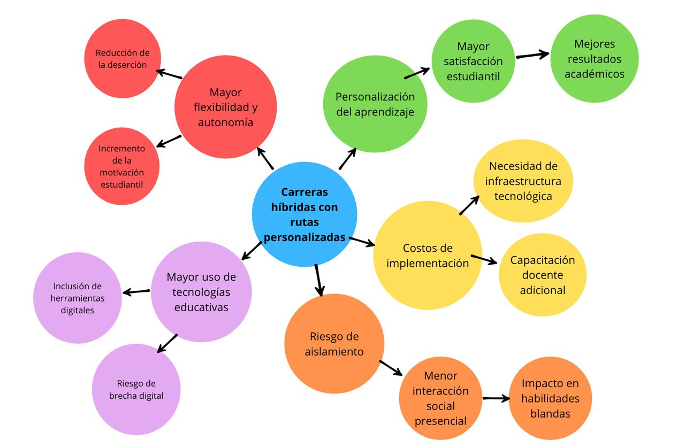
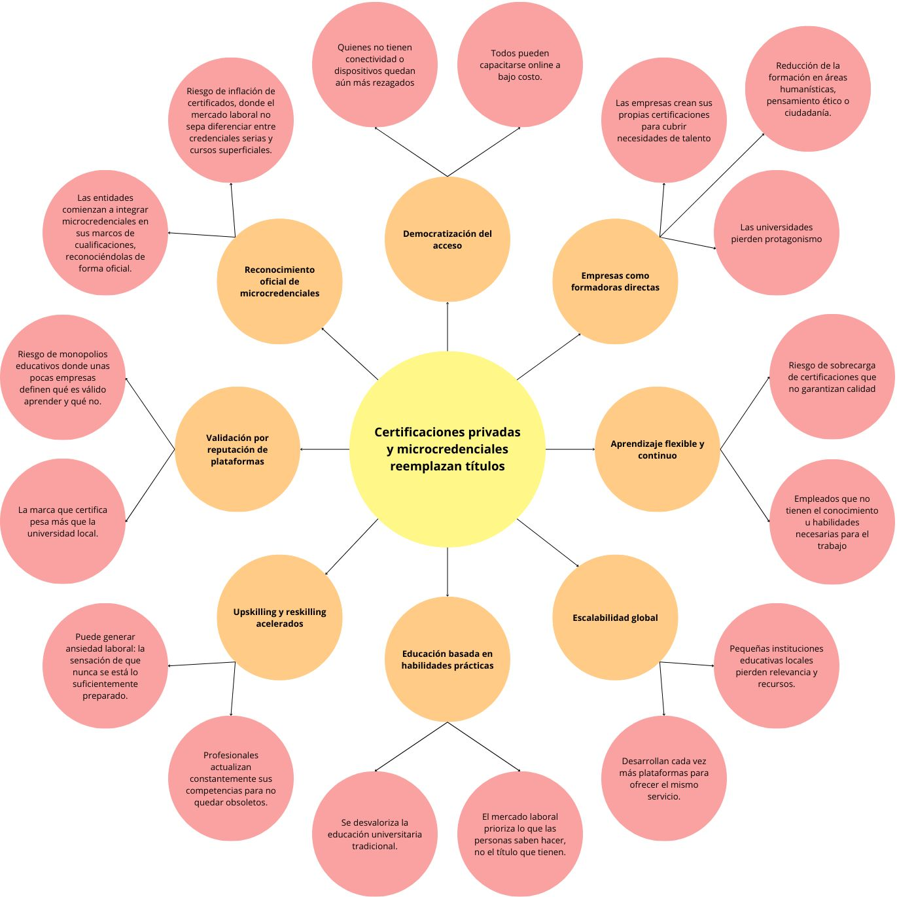
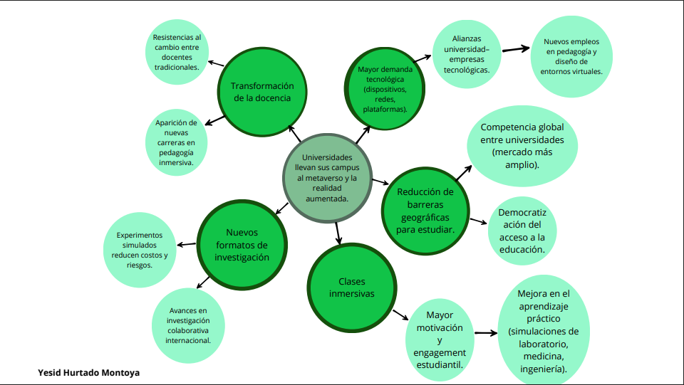

Metodología AEIOU para identificar tendencias emergentes en educación
Análisis sistemático de señales emergentes en educación superior
Ejemplo: Universidad de los Andes: currículo flexible con trayectorias personalizadas
Ejemplo: Google Career Certificates y Coursera: microcredenciales reconocidas por empresas
Ejemplo: Universidad EAFIT (Medellín): Centro de Innovación, Consultoría y Empresarismo (CICE)
Ejemplo: Arizona State University: implementación de ChatGPT como tutor virtual personalizado
Ejemplo: Pontificia Universidad Javeriana: programas de educación continua y upskilling
Las universidades deben integrar trayectorias adaptativas, apoyadas en IA y tecnologías digitales, para ajustarse a las necesidades de cada estudiante.
El mercado laboral privilegia certificaciones prácticas y rápidas, impulsando procesos de upskilling y reskilling frente a los títulos extensos.
Las universidades se consolidan como motores de creación de valor, integrándose con ecosistemas empresariales y fomentando pensamiento crítico.
La inteligencia artificial permite un aprendizaje adaptativo en tiempo real, transformando la relación estudiante-profesor.
La educación se concibe como un proceso continuo que acompaña al individuo a lo largo de toda su vida, ajustándose a los cambios del mercado laboral.






Descubre qué señales se han identificado según artículos e investigaciones